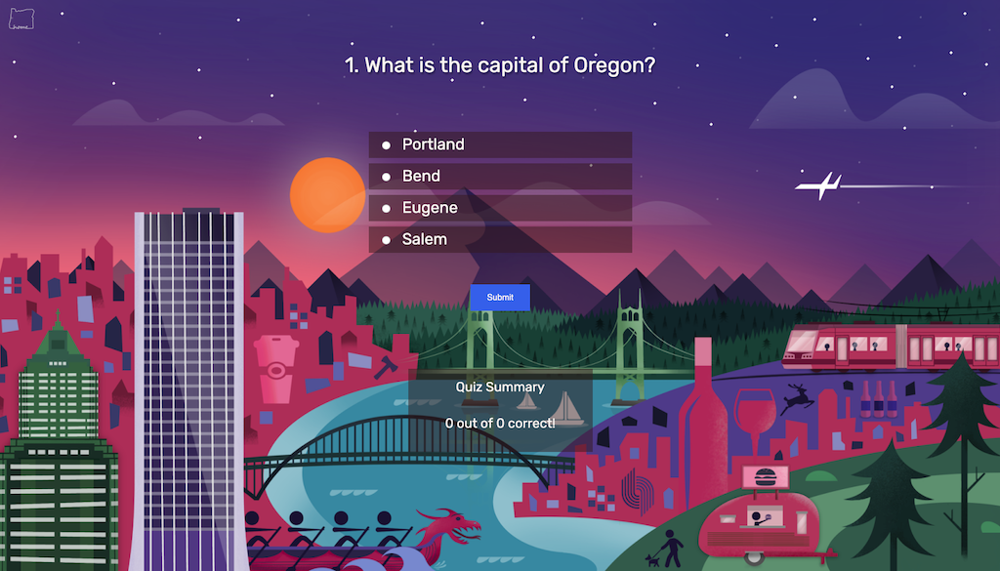
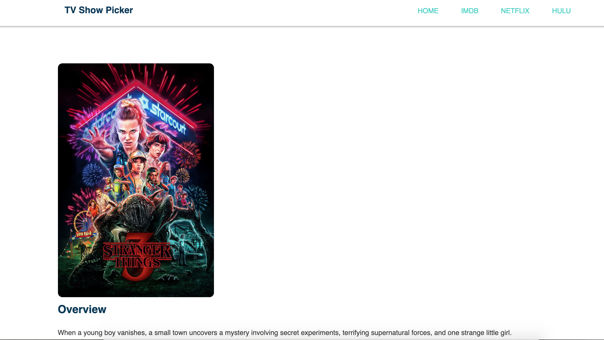

MY WORK
PDX Quiz Application

Description: A basic quiz application coded from scratch to display both my knowledge and skill with JavaScript and JQuery
but also my love of my hometown of Portland, Oregon.
The basic idea was that only by manipulating the DOM to
include a start screen, quiz questions, multiple choice answers, user feedback and a quiz summary page at the end.
Technologies used: JavaScipt, JQuery (DOM Manipulation), HTML and CSS
TV Show Picker

Description: A simple app to help you find a new TV show to watch. This minimalistic app will let you randomly select a popular show from a list of top rated shows and will select it for you, show you a short summary and give you the option to watch a short trailer to see if you want to start watching it. If it's not your style, then just hit the button and get another show.
This was a project that required the use of a web API to creatively manipulate and display data.
Technologies used: JavaScipt, The Movie DB API, HTML and CSS